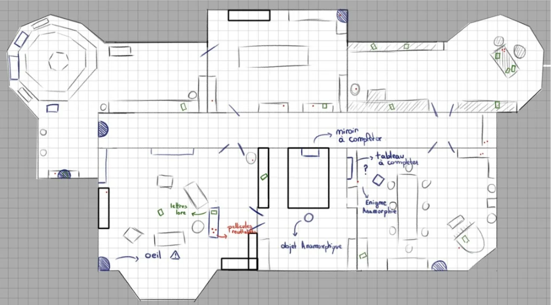
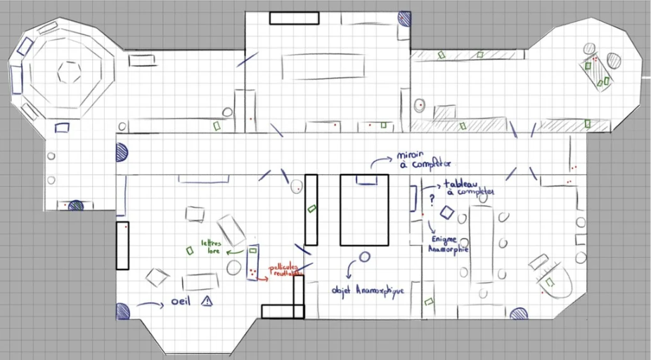

Introduction
This is the first complete game I created, serving as my final project for the first year of game design at ESMA Toulouse. Over two months, I designed a 2D platformer from start to finish—crafting the universe, setting the mood, gathering inspiration, and developing the game solo.
Development
Monster AI
For our horror game we needed a monster and that monster is Hubert and for Hubert we need an IA.The IA is pretty simple, he wanders into the mansion using points who are disseminate throught the game. He just pick one and goes to it using a NavMesh
To do that, I used Blackboard and Behavior Tree for the first time—two tools in Unreal Engine that assist in creating AI.


Puzzle
During the game, the player will encounter various puzzles, including a spinning dial where they must replicate a pattern.
Working on this part was pretty fun because and have some kind of challenge. we needed a challenging puzzles but easly enought to complete it in a small amount of time.
The code behind it is simple: every ring of the dial is linked to a button that spins it. When the correct rotation is set, the puzzle is completed.


Mansion
At certain points, the furniture in the mansion will change places
My task was to create a system that would help the artists working on the environment by simplifying this task.
I decided to assign tags to the props. When the game starts, every prop with a tag goes into a list, and we only display the ones with the correct tag.
This approach led to several complications, particularly with the baking of the lights, as well as the management of various collisions and optimization issues. I learned a lot from this part of the project, and today I would simply break the manor down into several parts using Unreal's persistent level.
 
